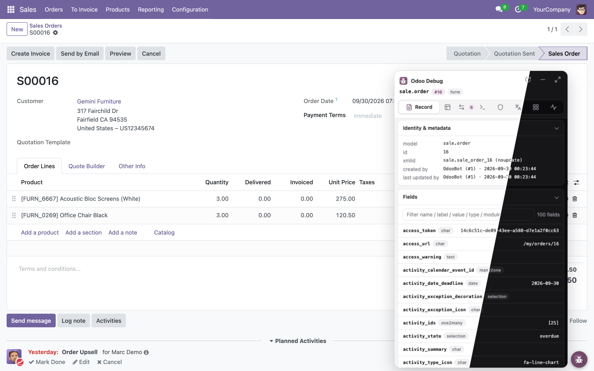
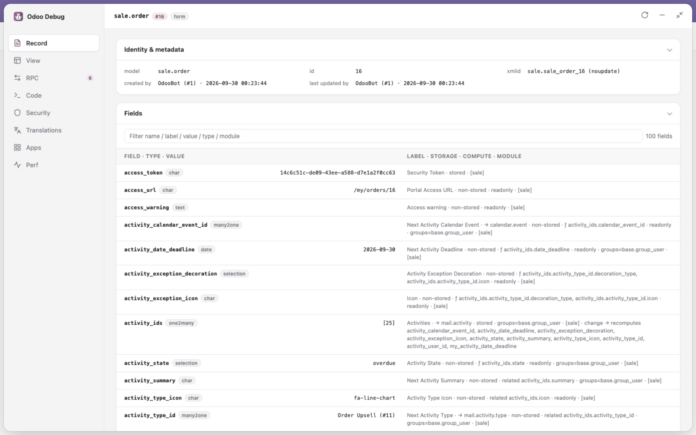
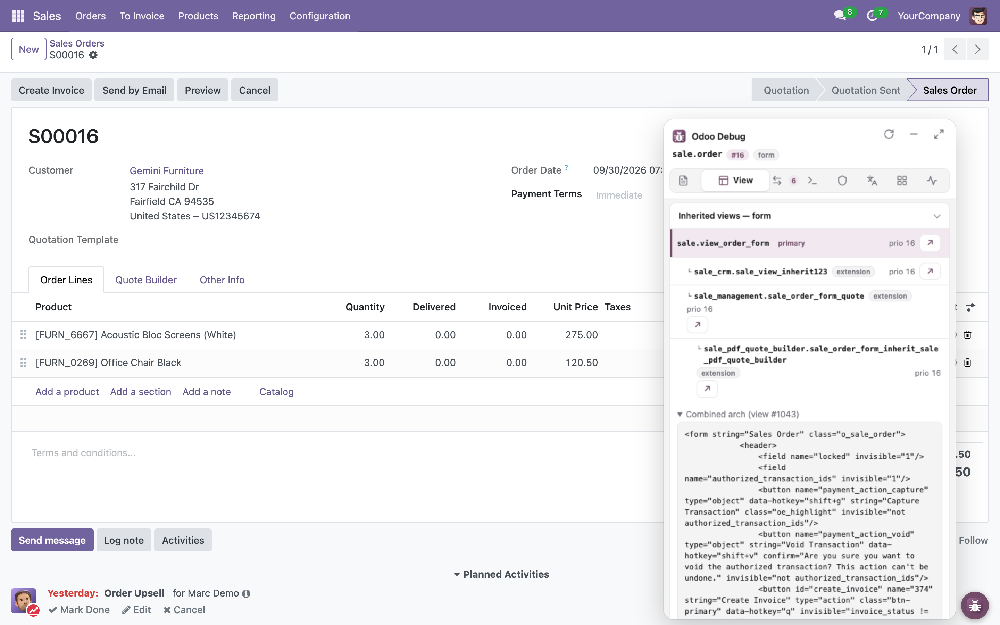
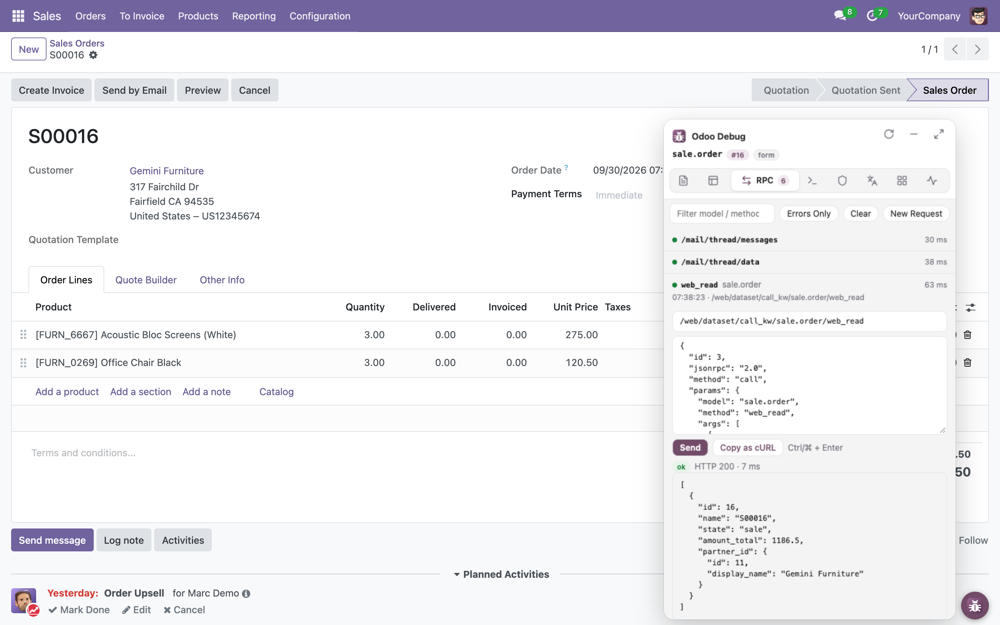
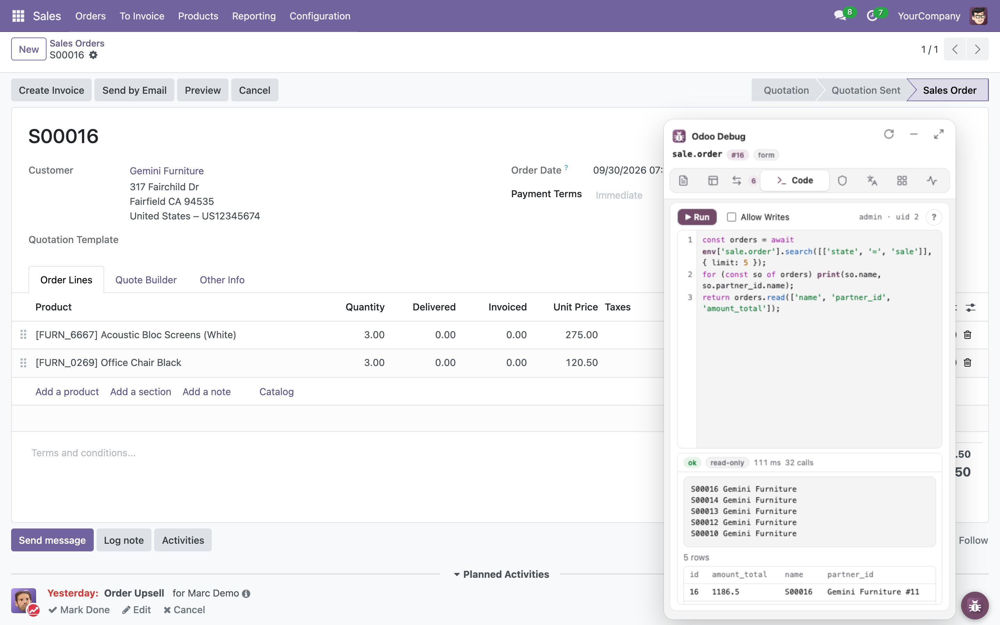
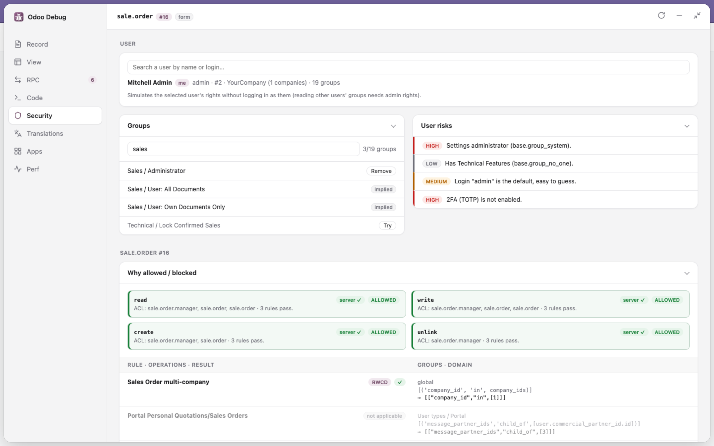
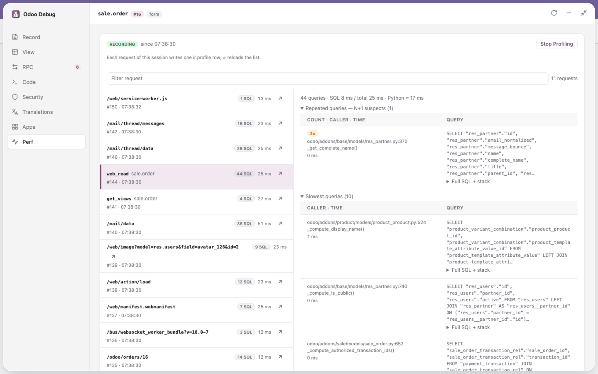

Stop guessing. See why Odoo does what it does.
Đừng đoán nữa. Thấy ngay vì sao Odoo chạy như vậy.
A debug panel right on the Odoo page: which module adds a field, which inherited view changed the form, which RPC failed, which record rule blocks a user, which request fires 50 SQL queries.
Bảng debug ngay trên trang Odoo: module nào thêm field, view kế thừa nào sửa form, RPC nào lỗi, record rule nào chặn user, request nào bắn ra 50 câu SQL.

Developer mode shows what.
Odoo Debug shows why.
Developer mode cho thấy cái gì.
Odoo Debug cho thấy vì sao.
Seven tabs for what you usually dig out of the source code, the database or the server log.
Bảy tab cho những thứ bạn thường phải lục trong source code, database hay log server.
- xmlids,
noupdate, who created and last updated the record - Type, value, module and storage of every field
- Compute / related source,
groups= - Which fields each one triggers a recompute of
- xmlid,
noupdate, ai tạo và ai sửa record lần cuối - Kiểu, giá trị, module, cách lưu của mọi field
- Nguồn compute / related,
groups= - Field nào kích hoạt tính lại những field nào
- Inheritance tree: primary + extensions, priority, source file
- Combined arch, as the webclient receives it
- Action details
invisible/readonly/requiredevaluated like the webclient
- Cây kế thừa: primary + extension, priority, file nguồn
- Arch đã gộp, đúng như webclient nhận được
- Thông tin action
invisible/readonly/requiredtính đúng như webclient
- Live log of JSON-RPC and JSON-2 calls with timing
- Errors with the full Python traceback
- “Why was it blocked?” jumps to Security for
AccessErrors - Edit & Resend any call, or a New Request; Copy as cURL
- Nhật ký trực tiếp JSON-RPC và JSON-2 kèm thời gian
- Lỗi kèm đầy đủ traceback Python
- “Vì sao bị chặn?” nhảy sang Security khi gặp
AccessError - Sửa & Gửi lại mọi lời gọi, hoặc Request mới; Sao chép dạng cURL
- JavaScript with an ORM-like
env:search,read,mapped, any public method - Fields read like in Python:
rec.partner_id.name - Suggestions while typing: models of the installed modules, their fields, recordset methods
- Runs with the page's session: that user's ACLs, record rules and companies apply
- Read-only by default; results as a table, with every call made
- JavaScript với
envkiểu ORM:search,read,mapped, mọi method public - Đọc field như Python:
rec.partner_id.name - Gợi ý khi gõ: model của các module đang cài, field, method của recordset
- Chạy bằng phiên của trang: áp ACL, record rule và công ty của user đó
- Mặc định chỉ đọc; kết quả dạng bảng, kèm mọi lời gọi
- db, version,
web.base.url,test_mode - Effective rights, ACLs, record rules, groups
- System parameters, secrets masked
- db, version,
web.base.url,test_mode - Quyền thực tế, ACL, record rule, nhóm
- Tham số hệ thống, giá trị bí mật được che
- Simulate another user's rights without logging in as them
- Rule by rule: which one allows, which one blocks
- User risk audit, fields hidden by
groups= - Instance checks: HTTPS, cookie flags, security headers, database manager
- Giả lập quyền của user khác mà không cần đăng nhập bằng user đó
- Từng rule một: rule nào cho phép, rule nào chặn
- Đánh giá rủi ro user, field bị ẩn bởi
groups= - Kiểm tra instance: HTTPS, cờ cookie, security header, database manager
- Odoo's built-in server profiler, one click to start / stop
- SQL count and duration of every request
- Repeated queries (N+1 suspects) and the slowest ones, with caller
- Speedscope flame graph
- Profiler có sẵn của Odoo, một click để bật / tắt
- Số câu SQL và thời gian của từng request
- Câu lặp lại (nghi N+1) và câu chậm nhất, kèm nơi gọi
- Flame graph speedscope






Up and running in a minute
Chạy được sau một phút
Not on the Chrome Web Store yet: load it unpacked in Chrome, Edge, Brave or any Chromium browser.
Chưa có trên Chrome Web Store: cài dạng unpacked trên Chrome, Edge, Brave hoặc trình duyệt nhân Chromium bất kỳ.
- 01Download
odoo-debug-v<version>.zipfrom Releases and unzip it.Tảiodoo-debug-v<version>.ziptừ Releases rồi giải nén. - 02Open
chrome://extensionsand turn on Developer mode.Mởchrome://extensionsvà bật Developer mode. - 03Click Load unpacked and select the unzipped folder.Bấm Load unpacked và chọn thư mục vừa giải nén.
- 04Open any Odoo page and click the round button.Mở một trang Odoo bất kỳ và bấm vào nút tròn.
Your data stays in your Odoo
Dữ liệu của bạn nằm yên trong Odoo
Private by design
Riêng tư từ thiết kế
- Talks only to the Odoo server of the tab you are on, with your own session
- No backend, no analytics, no tracking
- The session cookie value is never read, only its flags
- Odoo data only reaches the page through
textContent - Open source: read every line on GitHub
- Chỉ nói chuyện với server Odoo của tab đang mở, bằng chính phiên của bạn
- Không backend, không analytics, không theo dõi
- Không bao giờ đọc giá trị cookie phiên, chỉ đọc các cờ của nó
- Dữ liệu Odoo chỉ vào trang qua
textContent - Mã nguồn mở: đọc từng dòng trên GitHub
Compatibility
Tương thích
- browser
- Chrome, Edge, Brave and other Chromium browsersvà các trình duyệt nhân Chromium
- manifest
- V3
- languages
- English, Tiếng Việt
- themes
- System, light, dark, and 9 editor themes (Dracula, Monokai, Nord…)Theo hệ thống, sáng, tối, và 9 theme kiểu editor (Dracula, Monokai, Nord…)
- build
- None: plain JavaScriptKhông cần: JavaScript thuần
Free, and built in the open
Miễn phí, phát triển công khai
Read the code, report issues, send pull requests. A star is the easiest way to say thanks, and it helps other Odoo developers find the project.
Đọc code, báo lỗi, gửi pull request. Một ngôi sao là cách cảm ơn đơn giản nhất, và giúp các lập trình viên Odoo khác tìm thấy dự án.